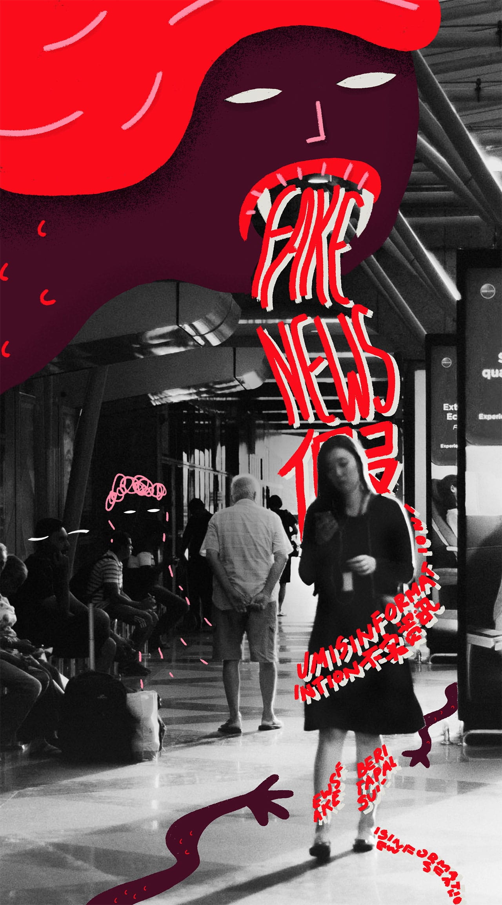

12 NOV 2019
12 NOV 2019
12 NOV 2019
13 NOV 2019
13 NOV 2019
13 NOV 2019
13 NOV 2019
13 NOV 2019
13 NOV 2019
13 NOV 2019
14 NOV 2019
15 DEC 2019
( Published on Dec 13, 2020 )
How ‘fake news’ on the Hong Kong protests reached our shores
Focussing on the 2019-2020 Hong Kong anti-government protests, this is the first media investigation in Malaysia to map how international online disinformation campaigns made its way to our shores and spread within local online communities.
From 2019 to 2020, Hong Kong was gripped by a series of mass anti-government protests that brought the financial hub to a standstill. The protests were triggered by fears that a controversial new bill at the time – which would have allowed extraditions to mainland China – could impact Hong Kong’s judicial autonomy and the ‘One country, Two systems’ arrangement.
In the months that followed the first rally, as peaceful marches swelled in size and escalated into violent confrontations between protesters and police, a parallel information war began playing out between anti-protest and pro-Hong Kong factions in cyberspace.
Unlike the protests themselves which were largely contained within Hong Kong, this information war soon became a disinformation race that involved both China’s state media and anti-Chinese Communist Party (CCP) forces, and which eventually spread to different countries including Malaysia.
In an 8-month long investigation, we sought to trace the origins of false information on the protests which have triggered heated disputes among Malaysians both online and off.
Disinformation is false information that is deliberately created or disseminated with the express purpose to cause harm. Producers of disinformation typically have political, financial, psychological or social motivations.
To understand how such disinformation infiltrated the Malaysian online public sphere, who were the main creators and “importers” of such information, and to gauge its reach, Malaysiakini collected over 11,000 posts published on 384 public Malaysian Facebook pages between June 2019 (when the protests began to peak) and March 2020 that contained keywords related to the protests. We then pored over all posts to identify false and misleading content, and traced their origins and distribution paths.
Almost all of the misinformation detected was in Chinese, in either traditional and simplified characters. However, this observation should not be used to dismiss the possibility of disinformation campaigns targeting non-Chinese audiences in Malaysia.
You can review our methodology and its limitations (https://kuangkeng.github.io/misinfo-hk/#methodology) at the bottom of this report.
Mainstream Chinese language media in Malaysia were found to be among the main ‘importers’ of disinformation originating from China state media and other pro-CCP media in Hong Kong.
We found many news reports about the protests published by local Chinese language mainstream media were taken whole from foreign press including those that are known to be biased and hyper-partisan and which contained elements of untruths concerning the demonstrations. Some of these 'copy-paste' reports did not credit the original publisher. However, a simple search on Google was able to bring up the original reports.
By republishing the articles (see examples below), local mainstream media not just lent credibility to the disinformation within but amplified them to local audiences, who, in turn, shared the reports through Facebook pages viewed by their followers. Some of the biggest Facebook pages in our dataset have hundreds of thousands of followers, enabling a piece of disinformation to reach potentially millions of Malaysians within just a few hours.
We have picked two cases from our investigation to illustrate the role of local Chinese media in the spreading of disinformation.
12 NOV 2019
12 NOV 2019
12 NOV 2019
13 NOV 2019
13 NOV 2019
13 NOV 2019
13 NOV 2019
13 NOV 2019
13 NOV 2019
13 NOV 2019
14 NOV 2019
15 DEC 2019
7 AUG 2019
7 AUG 2019
7 AUG 2019
8 AUG 2019
8 AUG 2019
8 AUG 2019
8 AUG 2019
10 AUG 2019
7 SEP 2019
7 SEP 2019
When asked about the disinformation coming from foreign media, news editors at local Chinese dailies responsible to filter and curate international news acknowledged the difficulties in providing accurate and balanced information, due to the current short news cycle and distance.
“There are blindspots. Sometimes we can’t find live reports from other media (on the same incident). This has caused difficulty for us because we need to be timely, so it is hard for us to verify a piece of information. After all, we are not there and we report based on what the local media there have reported,” said Orientaly Daily News international news editor Liew Hwei Yin on the reports of the alleged school bus attack.
Other Chinese dailies declined to comment.
She knows very well the political inclination and bias of different foreign media. Hence the newsroom usually tries to compile information from different publications across the political spectrum.
“Our standard operation is news compilation. We know Apple Daily and Wen Wei Po are at the opposite ends of the spectrum. So we will combine the content from both publications and let the readers make their own judgement because we can’t force readers to accept a certain news angle,” explained Liew.
For the record, our investigation found that such new compilations were produced by Chinese dailies alongside articles taken from pro-Beijing foreign media in whole without any editing. Most misinformation was found in the latter articles, as shown in the examples above.
Despite the difficulties faced by local Chinese media in verifying foreign news, media lecturer Oung Kang Wei opined that they are still responsible for the spreading of foreign disinformation.
“Put it this way, they are not the culprit but they are accomplices. We can’t say they are innocent. After all, they are the ones who first laid down the rules recognising Wen Wei Po, Phoenix New Media (which operates ifeng.com), Ta Kung Pao, Xinhua News Agency, China Review News Agency, etc. as official and credible media.
“Local Chinese media do not create these news because they don’t have first-hand information, but they are the media responsible for reproducing and disseminating such news,” said Oung, who was previously also an international news editor at a local Chinese daily.
He pointed out that the political inclination of media owners and the conservative nature of local Chinese media also play a role in editorial direction.
“If the (specific media) owners are pro-Beijing business people, there would be more news favorable to China."
Malaysiakini also discovered that posts on the protests and the comments they attracted were overwhelmingly anti-protesters and pro-Beijing although both sides of the political divide - police and the protesters - resorted to excessive force and violence during the protests.
To note, this could be due to the fact the scope of our investigation only focussed on Facebook. Most Facebook posts we compiled were from local Chinese dailies which relied on information from mainstream Hong Kong and China media.
Some of the mainstream media in Hong Kong were clearly on the side of the establishment such as the state-owned Wen Wei Po (文汇报) and Ta Kung Pao (大公报) while their counterparts in China are also state-owned mouthpieces like Global Times (环球时报) and CCTV.
On the other hand, anti-Beijing media such as the various publications under the Falun Gong-affiliated Epoch Times (大纪元时报) that have been churning out disinformation attacking the CCP during the protests were not considered as “official” information by Chinese Malaysian dailies.
It’s been reported that both sides of the Hong Kong protests generated and spread disinformation to sway public opinion, but the platforms used by protesters were very different from their rivals. The former, however, preferred instant messaging app Telegram that encrypted their messages and protected their identities. It’s hard for information circulated on such platforms to go beyond local users and reach foreign media. Our investigations, however, did not cover any messaging applications. Read more about our methodology at the bottom.
Aside from this, our investigations identified more than a dozen popular public Facebook pages run by managers based in Malaysia that have been sharing misinformation on the protests. Videos, articles and news reports with sensational and exaggerated headlines were shared by both pro- and anti-protesters pages. Such content often attracted huge responses from users who shared the same view.
However, for the record, we found no evidence to indicate these pages were intentionally created to spread misinformation or propaganda for either party. Many of these pages have been active for several years and have built considerable following before the protests erupted.
Most of them can be categorised into three groups - town/state-based communities such as “I’m from Penang” (我来自槟城), supporters of local political parties like “We Fully Support P.R- D.A.P 我们全力支持民行”, and news information sharing pages such as “FBT News 新闻最前线”.
Many of them belonged to networks of pages that amplified each other’s messages by simultaneously posting the same content and cross-sharing content. However, we could not confirm if the pages were managed by the same people as Facebook only reveals the location of the page managers but not their identities.
One of those networks identified in our investigation consists of three Facebook pages - “World news” (天下无所不闻), “I can’t find any reason to support BN” (我真的找不到支持国阵的理由) and ”还我公正，力挺安华！We Support Anwar！”. Combined, they have close to 60,000 likes.
These pages have cross-shared or published some 20 posts with identical content that were either pro-Beijing or anti-protesters. Most of those posts used exaggerated or sensational language containing false information.
For example, one post about Hong Kong police searching for protesters that vandalised the legislative council building had a message that read, “10 thugs have been convicted! Hong Kong begins citywide search! Foreign ministry denounces UK! Declare war if more interference!” (10名暴徒罪證已定！香港開始全城搜捕！外交部痛斥英國！再干涉就開戰！).
The post is no longer available on Facebook. The reasons for its removal was not made clear but it is available in our database that we have made public.
Almost all their common posts were articles or videos that had been published on Qiqu.live (screenshot above), a content farm targeting Chinese-speaking audiences. This pattern was also found in other networks of pages. They consistently posted articles and videos related to the protests from the same content farm.
Content farms or content mills refer to websites that publish a large amount of low-quality content, often with sensational titles, to lure clicks and views with the purpose of earning advertising revenue or swaying public opinions. Since their sole purpose is to attract attention, their content often contains misleading and/or false information.
According to The Reporter, an award-winning investigative journalism website based in Taiwan, a network of hundreds of content farms targeting Chinese-speaking audiences in Asia was run from Malaysia. The websites in this network include those with “Qiqu” in their domain names like Qiqu.live and Qiqu.pro and those with “KanWatch” like KanWatch.com, KanWatch.me and KanWatch.site.
A deeper look at Qiqu found that many of the videos it published on the China-US geopolitics originated from pro-Beijing YouTube channels like 时政焦点, 中国新观察 and 时政热点.
11 JUN 2019
11 JUN 2019
11 JUN 2019
11 JUN 2019
Malaysiakini investigation also identified Facebook pages that distributed pro-protesters misinformation although the number is much lower than those in the opposite camp. Most of them were set up as pro-Pakatan Harapan/Pakatan Rakyat pages. However, none of them were official Pakatan pages and there is no evidence found indicating any Pakatan leaders were behind them.
“Rakyat Rise to Change the Regime” (全民起義 改朝換代) was one of the most active and popular pro-protesters pages run by managers based in Malaysia.
It consistently provided disinformation to its 60,000 followers during the peak of the protests. This included content from foreign media, especially YouTube channels affiliated with Epoch Times, a multi-platform media network backed by the anti-Beijing spiritual movement Falun Gong.
The channels include Epoch Times Hong Kong (香港大紀元新唐人聯合新聞頻道), New Tang Dynasty Television (NTDTV, 新唐人電視臺), Crossroads of the World (世界的十字路口 唐浩) and Dayu Show (新聞拍案驚奇 大宇).
Epoch Times Hong Kong, which has over 400,000 subscribers, was temporarily suspended by YouTube twice. The first was in early November 2020 during the US presidential election and the second was in January 2021, just before the inauguration of US President Joe Biden. YouTube did not reveal the reason behind both suspensions.
Started in March 2019, Dayu Show quickly accumulated over 575,000 subscribers in just 20 months. The show’s only host, Lee Da Yu, was a broadcast journalist with NTDTV before joining the show.
10 OCT 2019
1 NOV 2019
4 OCT 2019
4 OCT 2019
11 OCT 2019
21 NOV 2019
21 NOV 2019
The top official representative of the China government in Malaysia, the Chinese embassy, was also found to be spreading disinformation through its official Facebook page.
Although the page only had a moderate following with less than 22,000 likes when the protests started in June 2019, the number rose to almost 51,000 in March 2020, a 130 percent growth in nine months, according to Crowdtangle data.

Serving as an official source of information, local media has been citing information posted by the Facebook page in their news report and treating them as official statements. Hence any information posted on the page has the potential to go beyond its followers and reach more Malaysian audiences through the amplification of local media.
Most of the information posted on its Facebook page is about Chinese history, culture and the achievements of the Chinese government. However, we managed to identify at least two videos shared by the page with misleading or unverified conspiracy theories that the Hong Kong protests were funded and plotted by the West.
30 JUL 2019
19 OCT 2014
30 OCT 2016
5 AUG 2019
12 JUN 2019
Malaysiakini’s investigation found that although the disinformation campaign was started by foreign forces with a clear agenda to influence public opinion both local and international, it was brought into Malaysian cyberspace mainly by local players driven by different goals.
Local Chinese language media was found to be passive “importers” of the news whose purpose was to provide coverage of the protests for local audiences. However, the lack of resources and skills in their newsrooms to filter, curate and fact-check the information before publishing them has led to the amplification and dissemination of largely pro-Beijing disinformation in Malaysia.
The problem was further aggravated by conventional news operations that preferred mainstream media content from China and Hong Kong – comprising mostly state-controlled and pro-establishment news organisations – and their long-term content-sharing partnership with these media.
On the other hand, this investigation identified local public Facebook pages that have been actively spreading foreign disinformation originating from China state media and other international anti-Beijing media.
These Facebook pages, both pro-Beijing and pro-protesters, were able to reach a wide audience not only due to the huge number of followers, but also through coordinated distribution with several pages functioning as a network.
Despite such huge influence, there was barely any oversight or action taken by social media platforms such as Facebook and local authorities on the practice. This could be due to the fact that the disinformation was mainly communicated in Chinese, which is not as widely monitored as English and Malay content here. Another reason could be that the content concerned a foreign issue with little, if any, direct impact on domestic affairs.
As global powers up their game in this information war, Malaysians could find themselves further misled, polarised and even exploited if we continue to do nothing. This vulnerability will expose us to more disinformation operations that could one day have greater and more direct influence on local affairs and could cause greater harm.